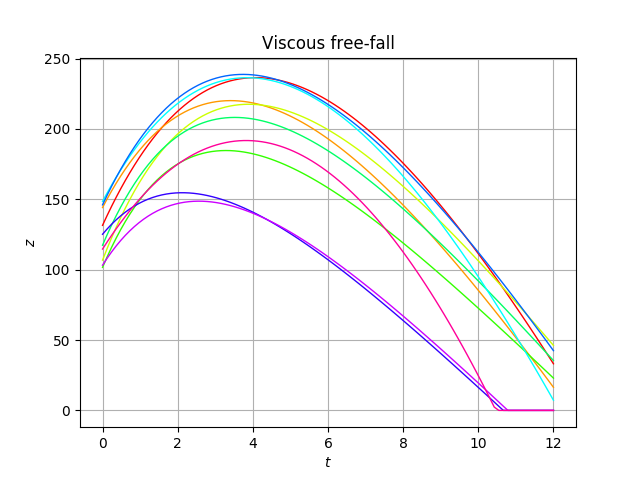
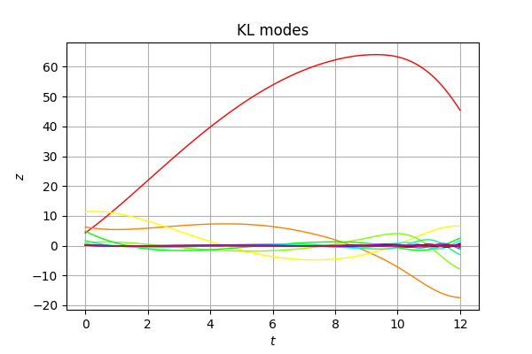
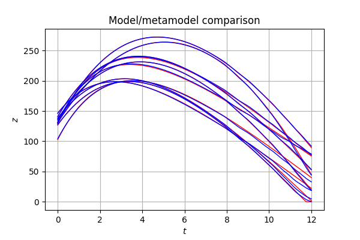

Viscous free-fall metamodel¶
In the following example we are going to create a metamodel of the fall of a solid in a viscous fluid:
For a viscous fluid the atitude z admits an explicit solution:
With:
- the altitude above the surface
- the initial altitude
 the gravitational acceleration
the gravitational acceleration  the mass
the mass  the linear drag coefficient
the linear drag coefficient - the initial speed (upward)
 the time
the time - the limit speed
- time caracteristic
The parameters , , and are
probabilistic:
In [1]:
from __future__ import print_function
import openturns as ot
from numpy import linspace, exp, maximum
In [2]:
# Some parameters
tmin=0.0 # Date minimale
tmax=12. # Date maximale
gridsize=100 # Nombre de pas de temps
mesh = ot.IntervalMesher([gridsize-1]).build(ot.Interval(tmin, tmax))
In [3]:
# model function
def AltiFunc(X):
g = 9.81
z0 = X[0]
v0 = X[1]
m = X[2]
c = X[3]
zmin = X[4]
tau=m/c
vinf=-m*g/c
t = linspace(tmin,tmax,gridsize)
z=z0+vinf*t+tau*(v0-vinf)*(1-exp(-t/tau))
z=maximum(z,zmin)
return [[zeta] for zeta in z]
alti = ot.PythonPointToFieldFunction(5, mesh, 1, AltiFunc)
In [4]:
# Creation of the input distribution
distZ0 = ot.Uniform(100.0, 150.0)
distV0 = ot.Normal(55.0, 10.0)
distM = ot.Normal(80.0, 8.0)
distC = ot.Uniform(0.0, 30.0)
distZmin = ot.Dirac([0.0])
distX = ot.ComposedDistribution([distZ0, distV0, distM, distC, distZmin])
In [5]:
# Sample the model
size = 10
inputSample = distX.getSample(size)
outputSample = alti(inputSample)
In [6]:
# Draw some curves
graph = outputSample.drawMarginal(0)
graph.setTitle('Viscous free-fall')
graph.setXTitle(r'$t$')
graph.setYTitle(r'$z$')
graph.setColors([ot.Drawable.ConvertFromHSV(i * (360.0/size), 1.0, 1.0) for i in range(len(graph.getDrawables()))])
graph
Out[6]:

In [7]:
# Compute the KL decomposition of the output
size = 2000
ot.RandomGenerator.SetSeed(0)
inputSample = distX.getSample(size)
outputSample = alti(inputSample)
algo = ot.KarhunenLoeveSVDAlgorithm(outputSample, 1.0e-6)
algo.run()
KLResult = algo.getResult()
scaledModes = KLResult.getScaledModesAsProcessSample()
graph = scaledModes.drawMarginal(0)
graph.setTitle('KL modes')
graph.setXTitle(r'$t$')
graph.setYTitle(r'$z$')
graph
Out[7]:

In [8]:
# Meta-model
# Here we have to suppress the Dirac component
alti = ot.PointToFieldConnection(alti, ot.SymbolicFunction(["z0", "v0", "m", "c"], ["z0", "v0", "m", "c", "0.0"]))
inputSampleChaos = inputSample.getMarginal(range(4))
postProcessing = ot.KarhunenLoeveLifting(KLResult)
outputSampleChaos = KLResult.project(outputSample)
size = 10
validationInputSample = distX.getMarginal(range(4)).getSample(size)
validationOutputSample = alti(validationInputSample)
In [ ]:
# First, using the most basic interface
# We limit the sampling size of the Kolmogorov selection in order to reduce the computational burden
ot.ResourceMap.SetAsUnsignedInteger("FittingTest-KolmogorovSamplingSize", 1)
algo = ot.FunctionalChaosAlgorithm(inputSampleChaos, outputSampleChaos)
algo.run()
metaModel = ot.PointToFieldConnection(postProcessing, algo.getResult().getMetaModel())
In [ ]:
graph = validationOutputSample.drawMarginal(0)
graph.setColors(['red'])
graph2 = metaModel(validationInputSample).drawMarginal(0)
graph2.setColors(['blue'])
graph.add(graph2)
graph.setTitle('Model/metamodel comparison')
graph.setXTitle(r'$t$')
graph.setYTitle(r'$z$')
graph
